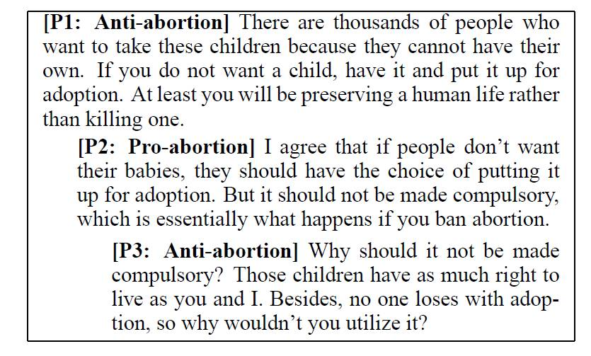

Extra-Linguistic Constraints on Stance Recognition in Ideological Debates
Kazi Saidul Hasan and Vincent Ng.
Proceedings of the 51st Annual Meeting of the Association for Computational Linguistics (Volume 2: Short Papers), pp. 816-821, 2013.
Click here for the PostScript or PDF
version.
The talk slides are available here.
Abstract
Determining the stance expressed by an author from a post written for a two-sided debate in an online debate forum is a relatively new problem. We seek to improve Anand et al.'s (2011) approach to debate stance classification by modeling two types of soft extra-linguistic constraints on the stance labels of debate posts, user-interaction constraints and ideology constraints. Experimental results on four datasets demonstrate the effectiveness of these inter-post constraints in improving debate stance classification.
Dataset
The dataset used in this paper is available from
this page.
BibTeX entry
@InProceedings{Hasan+Ng:13a,
author = {Hasan, Kazi Saidul and Vincent Ng},
title = {Extra-Linguistic Constraints on Stance Recognition in Ideological Debates},
booktitle = {Proceedings of the 51st Annual Meeting of the Association for Computational Linguistics (Volume 2: Short Papers)},
pages = {816--821},
year = 2013}
